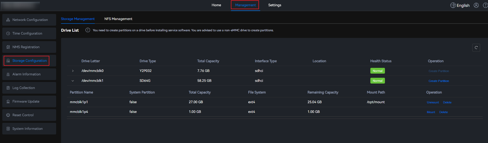
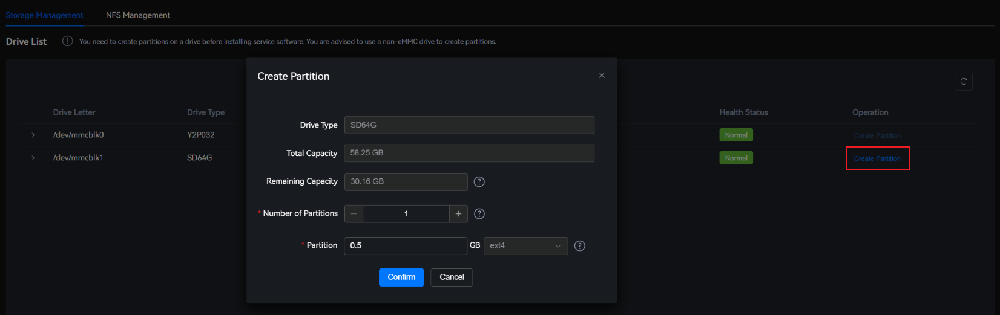
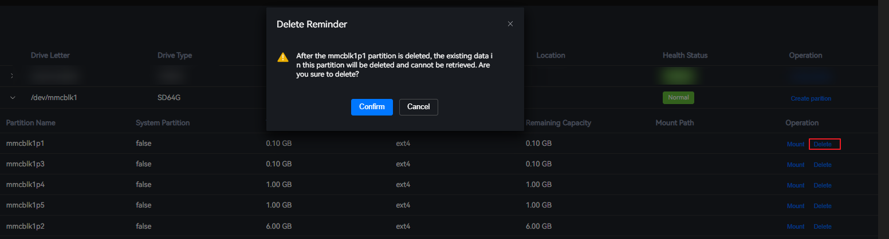
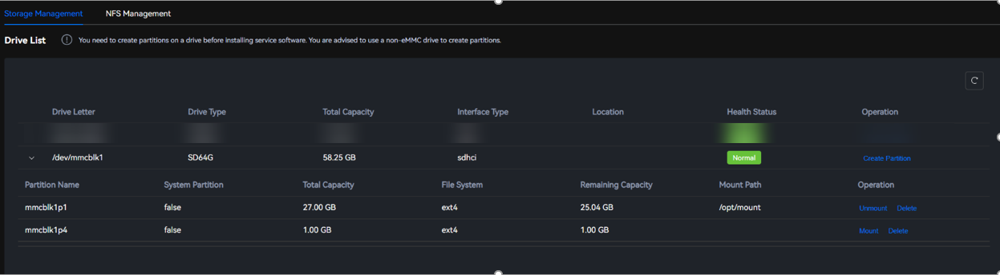
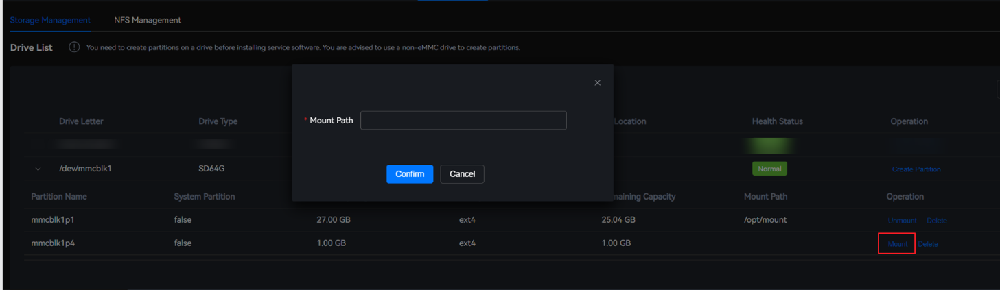

Parameter Description
Parameter |
Description |
|---|---|
Drive Letter |
Location of a drive |
Device Type |
Type of a drive |
Total Capacity |
Total capacity of a drive |
Interface Type |
Interface type of a drive |
Location |
Location of a drive |
Health Status |
Health status of a drive |
Operation |
Operation performed on a drive |
Viewing the Drive List
- Choose Management > Storage Configuration > Storage Management.Figure 1 Storage Management
 - In the Drive List area, locate a drive to be viewed and click
 before the drive.
before the drive.The expanded area displays the partition name, system partition, total capacity, file system, remaining capacity, and mount directory.
Figure 2 Local drive details
Creating a Partition
The eMMC cannot be frequently written. Otherwise, the eMMC will be unavailable. Partitions cannot be created, deleted, or modified using the eMMC. You are advised to use non-eMMC devices, such as SD cards, M.2 drives, HDDs, and USB drives, to create partitions. You are advised to create an independent partition on a non-eMMC device to mount /var/lib/docker. When deploying a containerized application, ensure that the capacity of the containerized application does not exceed 90% of the total capacity of the partition to which /var/lib/docker is mounted.

The drive creation time may be different due to differences between drive vendors and types. For example, a message that long drive creation time causes operation failures might be displayed on the page, but the drive is successfully created in reality.
- Choose Management > Storage Configuration > Storage Management.Figure 3 Storage Management
- In the drive list, click Create Partition in the Operation column of the drive. The Create Partition dialog box is displayed.Figure 4 Creating a partition
 - Set the parameters for creating partitions.Figure 5 Setting the parameters for creating partitions

Table 2 Parameters for creating partitions Parameter
Description
Device Type
Type of a drive
Total Capacity
Total capacity of a drive
Remaining Capacity
Remaining capacity of a drive
NOTE:The remaining capacity may be discontinuous due to drive partition fragmentation. Therefore, even if you create a partition whose capacity is smaller than the remaining capacity, the system may display a message indicating that the drive capacity is insufficient and the partition fails to be created.
Number of Partitions
Number of partitions. A maximum of 16 partitions can be selected.
Partition
Includes the partition capacity and file system.- Partition capacity: The maximum capacity cannot exceed the remaining free capacity. The value contains a maximum of one decimal place and must be a multiple of 0.5. The unit is GB. The minimum value is 0.5 GB.
- File system: Currently, only ext4 is supported.
- Click Confirm.
Deleting a Partition

- If you delete a partition, existing data in the partition will be deleted and cannot be restored. Exercise caution when performing this operation.
- Before deleting a partition, ensure that no service is running or the service has been stopped on the partition. Otherwise, errors may occur when you delete the partition.
- Choose Management > Storage Configuration > Storage Management.Figure 6 Storage Management
- In the Drive List area, locate a drive to be viewed and click
 before the drive to expand the partition list.Figure 7 Local drive details
before the drive to expand the partition list.Figure 7 Local drive details
- Locate the partition to be deleted and click Delete in the Operations column. A confirmation dialog box is displayed.Figure 8 Deleting a partition
 - Click Confirm.
Mounting a Partition
The eMMC cannot be frequently written. Otherwise, the eMMC and the entire system cannot be used.
- Choose Management > Storage Configuration > Storage Management.Figure 9 Storage Management

- In the Drive List area, locate a drive to be viewed and click
 before the drive to expand the partition list.Figure 10 Local drive details
before the drive to expand the partition list.Figure 10 Local drive details
 - Locate the partition to be mounted and click Mount in the Operations column. The Mount Partition dialog box is displayed.Figure 11 Mounting a partition
 - Enter the mount path.
- The mount path contains a maximum of 256 characters, including digits, letters, slashes (/), underscores (_), and hyphens (-). It must start with a slash (/) and cannot contain spaces.
- The default mount path is /opt/mount/. If you want to mount the partition to another path, run the /usr/local/mindx/MindXOM/tools/mount_white_path add Absolute_Path command to manually add the mount path to the trustlist. For details, see mount_white_path.
- The mount path cannot be a subdirectory of an existing mount directory.
- The mount path cannot exist in the system.
If the mounting fails, the partition may be damaged. Delete the partition and create a new one.
- Click Confirm.
The default permission on the mount point directory is 755. You can log in to the IES, enter the develop mode, and run the chmod command to modify the permission.
Unmounting a Partition
If you unmount a partition, containerized applications mounted to this partition will be unavailable. Exercise caution when performing this operation.
- Choose Management > Storage Configuration > Storage Management.Figure 12 Storage Management
- In the Drive List area, locate a drive to be viewed and click
 before the drive to expand the partition list.Figure 13 Local drive details
before the drive to expand the partition list.Figure 13 Local drive details - Locate the partition to be unmounted and click Unmount in the Operations column. A confirmation dialog box is displayed.Figure 14 Unmounting a partition

- Click Confirm.